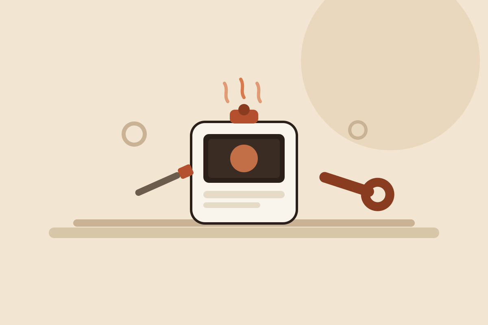
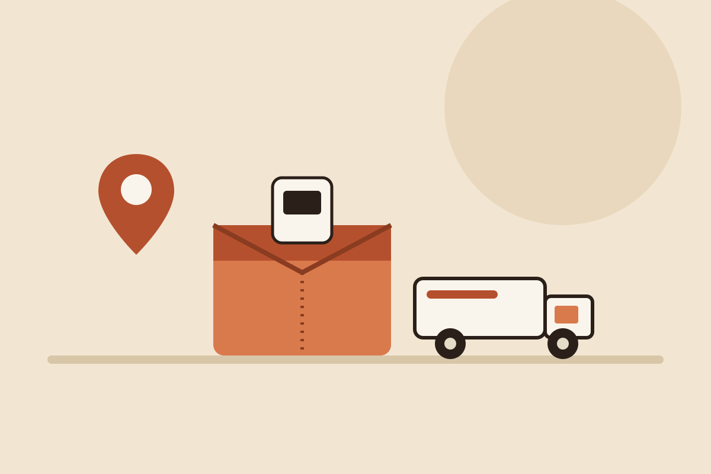

Especialización exclusiva en Mycook
Trabajamos únicamente con robots de cocina de la gama Mycook de Taurus, lo que nos permite conocer bien sus averías más habituales y sus componentes.
Diagnosticamos y reparamos robots de cocina Taurus Mycook con problemas de encendido, pantalla táctil, cuchillas, calentamiento, báscula o conexión Wi‑Fi. Presupuesto claro antes de intervenir y garantía sobre cada reparación.
Servicio técnico independiente. No somos servicio técnico oficial Taurus y no gestionamos equipos cubiertos por la garantía del fabricante.
Trabajamos únicamente con robots de cocina de la gama Mycook de Taurus, lo que nos permite conocer bien sus averías más habituales y sus componentes.
Conoces el coste antes de que se realice cualquier intervención sobre tu equipo.
Las intervenciones realizadas cuentan con garantía según las condiciones del servicio.
Solicita la recogida de tu robot de cocina Taurus Mycook sin necesidad de desplazarte.

Diagnosticamos y reparamos robots de cocina Taurus Mycook con averías electrónicas, mecánicas o de software. Revisamos el equipo, identificamos el origen del problema y te informamos del presupuesto antes de intervenir.
Estas son algunas de las incidencias que revisamos con más frecuencia en equipos Mycook.
El robot no enciende, se apaga solo durante el programa o presenta fallos de alimentación eléctrica.
Pantalla que no responde, se queda bloqueada, presenta cristal roto o botones que no funcionan.
Cuchillas que no giran, giran con dificultad, hacen ruido o presentan desgaste en el eje.
El robot no calienta, no alcanza temperatura o el sistema de inducción presenta errores.
Lecturas de peso incorrectas o báscula integrada que deja de responder.
Fugas de agua o vapor, juntas desgastadas y revisión de vaso, jarra y sellos.
Antes de reparar tu robot de cocina Taurus Mycook realizamos un diagnóstico técnico para localizar con precisión la avería. El diagnóstico tiene un coste de 20 € + IVA e incluye la revisión completa del equipo y el presupuesto de la reparación correspondiente.
Solo con el diagnóstico realizado podemos ofrecerte un presupuesto ajustado a la avería real de tu robot de cocina Mycook, evitando sorpresas en el coste final.
Cuéntanos el modelo de tu robot de cocina Mycook y la avería que presenta.
Trae el equipo a nuestras instalaciones o solicita la recogida desde Península.
Revisamos el equipo y localizamos el origen exacto de la avería.
Te informamos del coste antes de realizar cualquier intervención.
Reparamos el equipo, comprobamos su funcionamiento y te lo entregamos.
Si no puedes acercarte a nuestras instalaciones, solicita la recogida de tu robot de cocina Taurus Mycook y lo recogemos en cualquier punto de la Península para su diagnóstico y reparación.
Solicita tu recogida ahora
Consulta las valoraciones publicadas por clientes sobre nuestro servicio y atención.
Visita nuestro canal y descubre contenido técnico sobre reparación de robots de cocina.
C. de Joaquín María López, 26, 28015 Madrid. Metro Islas Filipinas, Canal y Moncloa. Aparcamiento público en Calle Blasco de Garay 61.
El formulario se envía directamente mediante la Gmail API configurada en Vercel. No abre ningún gestor de correo y no utiliza servicios externos de terceros.
Diagnóstico: 20 € + IVA. Te informamos del presupuesto de reparación antes de intervenir.
Taurusmycooktech está especializado exclusivamente en el servicio técnico y la reparación de robots de cocina de la gama Mycook de Taurus.
El diagnóstico técnico tiene un coste de 20 € + IVA. Incluye la revisión completa del robot de cocina y la localización de la avería antes de presupuestar la reparación.
Sí. Puedes utilizar el botón de solicitud de recogida para gestionar el envío desde cualquier punto de Península.
De lunes a viernes de 09:30 a 18:00. Sábados y domingos permanece cerrada la atención presencial. La atención telefónica y por WhatsApp está disponible 24 horas, 365 días.
No. Somos un servicio técnico independiente y no gestionamos reparaciones cubiertas por la garantía oficial del fabricante.
Sí, las reparaciones realizadas cuentan con garantía sobre la intervención según las condiciones del servicio.
Un robot de cocina Taurus Mycook que no enciende, no calienta o presenta la pantalla táctil bloqueada suele tener un origen concreto: un fallo en la placa de alimentación, un problema en el sistema de inducción o un componente de la pantalla dañado. Por eso, antes de sustituir piezas, en Taurusmycooktech realizamos un diagnóstico técnico que permite identificar la causa real de la avería y evitar reparaciones innecesarias.
Otras averías habituales están relacionadas con el motor de picado: cuchillas que no giran, ruidos anómalos o vibraciones excesivas suelen deberse a desgaste del eje o al motor. También revisamos la báscula integrada cuando presenta lecturas incorrectas, así como fugas de agua o vapor en juntas y sellos, y errores de conexión Wi‑Fi que impiden controlar el robot desde la aplicación.
Un mantenimiento periódico —limpieza de cuchillas, revisión de juntas y comprobación del sistema de calentamiento— ayuda a prevenir buena parte de las averías más comunes en robots de cocina Taurus Mycook. Si tu equipo presenta cualquiera de estos síntomas, puedes contactar con nuestro servicio técnico en Madrid o solicitar la recogida desde cualquier punto de la Península.